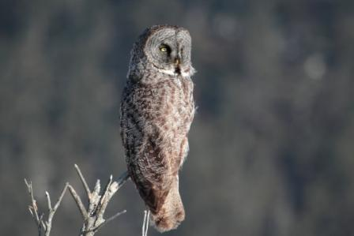

A CONTINUACION SE PRESENTAN DISTINTOS TIPOS DE BUHOS Y SUS HABITADS
| Tipo de buho | Habitat | Caracteristicas | imagen |
|---|---|---|---|
| Buho nival | Selvas tropicales | Significa que esta especie no se confunde con ninguna otra | .jpg)
|
| Mochuelo de madrigera | America del norte y america del sur | Tienes las patas mas largas entre las especies de buhos. esta es una pequeña especie de lechuga | .jpg)
|
| Carabo duende | Cadenas montañosas, cañones y barrancos | Recibe su nombre de los patrones de la luz y oscuridad de color grissu cuerpo |  |
| Buho chico | Terrenos abiertos con cierta arboleda | Tiene orejas mas prominentes y ahi en donde su nombre proviene | 
|
| Buho manchado del norte | Zonas boscosas de california | Su cuerpo tiene muchos matices de luz y color marron oscuro | 
|